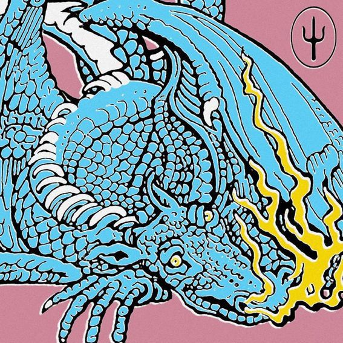
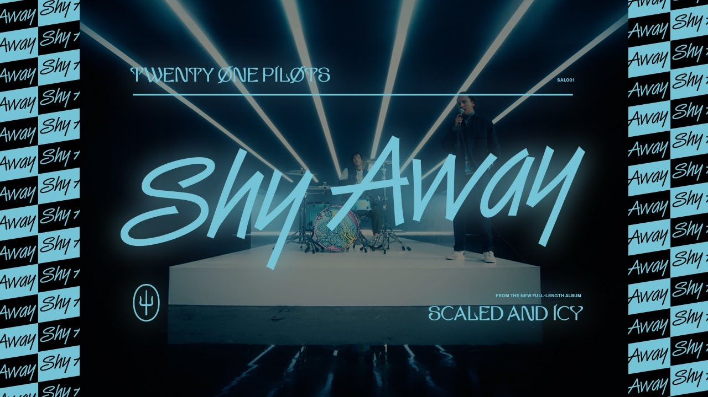
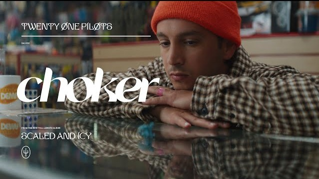
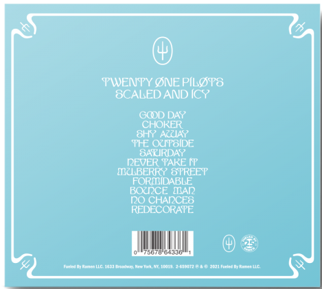

La banda sorprende a sus fans con su nuevo álbum
Ésta es la portada que tendra el álbum, lo que intriga a sus fans ya que no son los colores que la banda suele usar
DATO CURIOSO: El dragón que aparece en la portada se llama Trash como "basura" en inglés
El álbum cuenta con 11 canciones y fue lanzado el 21 del mes pasado
La primera canción lanzada de dicho álbum fue Shy Away
Después sacaron Choker
Y por último (antes de sacar el álbum completo) Saturday
Y como dije anteriormente, el resto del álbum se estrenó al público el 21 de mayo, y estas son las canciones que incluye:
Haz click en la imagen para escucharlo
A varios fans no les gustaron mucho sus nuevas canciones porque "no suenan como Twenty One Pilots" ya que tienen un estilo algo diferente a lo que usualmente usan en su música, suenan más alegres y animadas
Pero a la mayoría nos encantó, incluyéndome